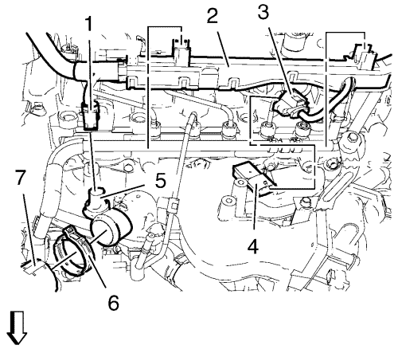

Cruze
Sustitución del colector de admisión
Procedimiento de desmontaje
Desmonte la cubierta del motor. Consultar
Sustitución de la cubierta del motor
.
Suba el vehículo a la altura máxima. Consultar
Elevación y soporte en alto del vehículo
.
Desmonte el aislante del compartimento delantero. Consultar
Sustitución del aislamiento del compartimento delantero
.
Extraiga el refrigerante. Consultar
Drenaje y llenado del sistema de refrigeración
.
Baje el vehículo a la altura máxima.
Retire el tubo indicador del nivel de aceite. Consultar
Extracción del tubo e indicador del nivel de aceite
.
Desmonte los 2 tornillos (1, 2) del tubo flexible de entrada del vaso de expansión del radiador.
Desmonte las 2 abrazaderas (3, 4) del tubo flexible de entrada del vaso de expansión del radiador.
Desmonte el tubo flexible de entrada del vaso de expansión del radiador (5).

Desmonte el enchufe del mazo de cables del sensor de temperatura del refrigerante (1).
Desmonte el enchufe del mazo de cables del sensor de presión y temperatura del aire de admisión (3).
Retire el mazo de cables (2).
Desmonte la abrazadera del tubo flexible de entrada del radiador (6).
Desmonte el tubo flexible de entrada del radiador (7).
Desmonte el colector de admisión. Consultar
Desmontaje del colector de admisión
.
Procedimiento de montaje
Monte el colector de admisión. Consultar
Montaje del colector de admisión
.
Monte el tubo flexible de entrada del radiador (7).
Monte la abrazadera del tubo flexible de entrada del radiador (6).
Monte el mazo de cables (2).
Monte el enchufe del mazo de cables del sensor de presión y temperatura del aire de admisión (3).
Monte el enchufe del mazo de cables del sensor de temperatura del refrigerante (1).
Monte el tubo flexible de entrada del vaso de expansión del radiador (5).
Monte las 2 abrazaderas (3, 4) del tubo flexible de entrada del vaso de expansión del radiador.
Monte los 2 tornillos (1, 2) del tubo flexible de entrada del vaso de expansión del radiador.
Monte el tubo del indicador de nivel de aceite. Consultar
Montaje del indicador de nivel de aceite y del tubo
.
Rellene con líquido refrigerante. Consultar
Drenaje y llenado del sistema de refrigeración
.
Monte la cubierta del motor. Consultar
Sustitución de la cubierta del motor
.
Suba el vehículo a la altura máxima.
Monte el aislante del compartimento delantero. Consultar
Sustitución del aislamiento del compartimento delantero
.
© Copyright Chevrolet. Reservados todos los derechos